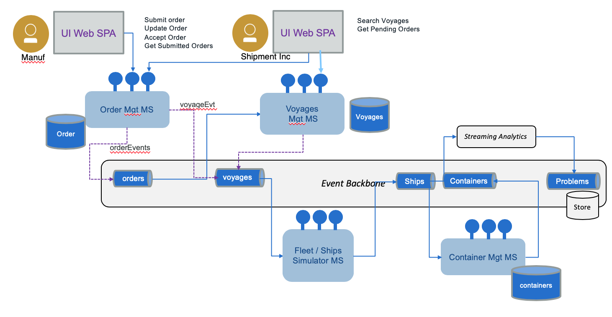

EDA Skill Journey
Implementing cloud native, event-driven solution with microservices deployed on kubernetes involves a broad skill set. We are proposing here a learning journey for developer with good programming background. This project includes best practices and basic knowledge on the technologies used inthe solution implementation, which represent the most used ones in modern architecture.
The EDA reference solution implementation in this project includes a set of technology we are using that represent the modern landscape of cloud native applications (Kafka, maven, java, microprofile, kafka API, Kafka Stream API, Spring boot, Python, Nodejs, and Postgresql) but also some specific analytics and AI components like Streams analytics and machine learning with Jupyter notebook. A developer who wants to consume this content does not need to know everything at the expert level. You can progress by steps and it will take a good month to digest everything. We are also proposing a bootcamp to build, deploy and re-implement part of the "Reefer container shipment solution".
Note
We expect you have some good knowledge around the following technologies.
- Nodejs / Javascript / Typescripts
- Java 1.8 amd microprofile architecture
- Python 3.6
- Angular 7, HTML, CSS - This is for the user interface but this is more optional.
- Maven, npm, bash
- WebSphere Liberty or OpenLiberty
- Docker
- Docker compose
- Helm
- Kubernetes
- Apache Kafka, Kafka API
Getting started around the core technologies used in EDA
From the list above, the following getting started and tutorials can be studied to get a good pre-requisite knowledge:
- From zero to hero in Java 1.8 - an infoworld good article
- Open Liberty getting started application
- Getting started with Apache Maven
- Getting started Nodejs and npm
- Getting started with Apache Kafka and the Confluent blog for getting started with Kafka
- Angular tutorial - This is for the user interface but this is more optional.
- Docker getting started
- Getting started with Open Liberty
-
Kubernetes and IBM developer learning path for Kubernetes and the Garage course Kubernetes 101.
-
Use the "Develop a Kubernetes app with Helm" toolchain on IBM Cloud
- Getting started in Python
- Applying a test driven practice for angular application
Event Driven Specifics
Now the event driven microservice involve specific technologies and practice. The following links should be studied in the proposed order:
EDA fundamentals
- Key concepts
- Reference architecture with event backbone, microservices and real time analytics
- Extended Reference Architecture with machine learning and AI integrated with real time analytics with machine learning workbench and event sourcing as data source, and real time analytics for deployment.
- Event sources - as event producers
- Event backbone where Kafka is the main implementation
- High availability and disaster recovery with IBM Event Streams or Kafka Architecture Considerations
Event driven microservice development
- Event driven design patterns for microservice with CQRS, event sourcing and saga patterns.
- Processing continuous streaming events
- Event-driven cloud-native applications
- Kafka producer API documentation with some of our event producers best practices
- Kafka consumer API documentation with some of our own Event consumers best practices
- Kafka Stream APIs, Java or Scala based API to implement functional processing as a chain of operation to consumer events and generating new event stream.
- Act on events with IBM Cloud Functions
- IBM Event Streams - stream analytics app Event detection on continuous feed using Streaming Analytics in IBM Cloud.
- Kafka monitoring
- Kafka Python API and some examples in our integration tests project
- Kafka Nodejs API used in the voyage microservice
Methodology
- Event storming methodology
- A concrete example to apply event storming, for a container shipment use case.
- Domain design driven implementation from event storming
Kubernetes, docker, microprofile
- As we can use docker compose to control the dependencies between microservices and run all the solution as docker containers, it is important to read the Docker compose - getting started article.
- Kafka is Getting started with IBM Cloud Event Streams the IBM product based on Kafka on public cloud
- IBM Cloud Private Event Streams the IBM product based on Kafka for private cloud
- Understand docker networking as we use docker compose to run the reference implementation locally.
- The evolving hybrid integration reference architecture: How to ensure your integration landscape keeps pace with digital transformation
- Java microprofile application
- Deploy MicroProfile-based Java microservices on Kubernetes
- Knative introduction
- How to deploy, manage, and secure your container-based workloads on IKS and part 2
Hands-on labs
The next steps beyond getting started and reading our technical point of view, you can try to deeper dive into the solution implementation and deployment: The source of this virtual bootcamp is the "Reefer container shipment solution".
Note
At the end of this training you should have the following solution up and running (See detailed description here):

Understand the event storming analysis and derived design
For those who are interested by the methodology applied we propose to review:
- The solution introduction to get a sense of the goals of this application. (7 minutes read)
- Followed by the event storming analysis report (15 minutes read).
- and the design derived from this analysis. (15 minutes reading)
Prepare a local environment
Here you have two options: running with docker compose, or running within Minikude, or the kubernetes single note running with docker (At least on Mac it works!).
- Get a local Kafka backbone environment, using docker compose, up and running to facilitate your development and testing. Get an event backbone up and running on your laptop in less than 3 minutes.
- Or use Minikube to get kafka, zookeeper and poastgreSQl up and running on kubernetes
Build and run the solution
Goals
Build and run the solution so you can understand the maven, nodejs build process with docker stage build.
- Build and deploy the solution locally using docker compose
- Or build and deploy the solution locally using Minikube
- Execute the integration tests to validate the solution end to end.
- [Optional] Execute the demonstration script
Review event driven patterns
- Review the Event sourcing explanations
- Review the CQRS pattern and the implementation in the order microservice.
Data replication with Kafka
One of the common usage of using Kafka is to combine it with a Change Data Capture component to get update from a "legacy" data base to the new microservice runtime environment.
We are detailing an approach in this article.
Other deployments
- Deploying the solution on IBM Cloud Kubernetes Service
- Deploying the solution on IBM Cloud Private
- Develop a toolchain for one of the container manager service
- Our Kubernetes troubleshooting notes